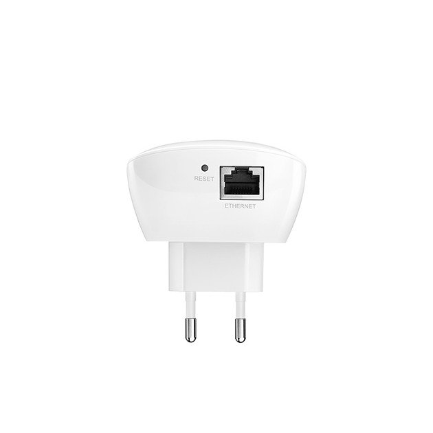

Tinklo įranga | Maršrutizatoriai | Wifi adapteriai | Modemai
 Parduotuvės Kontaktai Nemokamas atsiėmimas Prekių pristatymas Atsiskaitymas grynais 14 d. grąžinimo garantija +370 660 00200
Parduotuvės Kontaktai Nemokamas atsiėmimas Prekių pristatymas Atsiskaitymas grynais 14 d. grąžinimo garantija +370 660 00200
I - V 08:00 - 20:00
Akcijos ir pasiūlymai Namų buitinė technika, Maisto ruošimas Grįžti Namų buitinė technika, Maisto ruošimas
Namų buitinė technika
Grįžti Namų buitinė technikaStambi namų technika
Grįžti Stambi namų technikaSkalbimo mašinos
Džiovyklės
Dulkių siurbliai ir jų priedai
Kava ir kavos aparatai
Grįžti Kava ir kavos aparataiKavos aparatai
Kava
Kavamalės
Pieno plakikliai
Kavos priedai
Namų buitinė technikaStambi namų technika
Kava ir kavos aparatai
Virtuvės technika
Grįžti Virtuvės technikaStambi virtuvės technika
Grįžti Stambi virtuvės technikaŠaldytuvai
Šaldikliai
Viryklės
Orkaitės
Kaitlentės
Indaplovės
Gartraukiai ir jų filtrai
Mikrobrangų krosnelės
Mini viryklės
Mini orkaitės
Mini griliai
Visa įmontuojama technika
Virtuvės technikaStambi virtuvės technika
Visa įmontuojama technika
Maisto ruošimas
Grįžti Maisto ruošimasMaisto ruošimo prietaisai
Grįžti Maisto ruošimo prietaisaiBlenderiai
Garų puodai
Kokteilinės
Mėsmalės
Puodai, keptuvės, indai
Sulčiaspaudės
Sumuštinių keptuvės
Tarkavimo mašinos
Vaflinės, blyninės, spurginės
Vaisių ir daržovių džiovintuvai
Virduliai
Virtuviniai kombainai
Daugiau...
Maisto ruošimasMaisto ruošimo prietaisai
Kita buitinė technika
Grįžti Kita buitinė technikaRūbų, avalynės priežiūra
Grįžti Rūbų, avalynės priežiūraLygintuvai
Valymas garais ir atšviežinimas
Lyginimo sistemos
Siuvimo mašinos
Pūkų surinktuvai
Klimato kontrolės technika
Grįžti Klimato kontrolės technikaAromato skleidikliai
Meteorologinės stotelės
Radiatoriai
Šildytuvai
Ventiliatoriai
Oro drėkintuvai
Oro gaivikliai
Oro kondicionieriai
Oro sausintuvai
Kita buitinė technikaRūbų, avalynės priežiūra
Klimato kontrolės technika
Televizoriai ir garso technika Grįžti Televizoriai ir garso technikaVaizdo technika
Grįžti Vaizdo technikaTelevizoriai
Grįžti TelevizoriaiSamsung televizoriai
Panasonic televizoriai
LG televizoriai
Sony televizoriai
TV priedai
Grįžti TV priedai3D akiniai
Nuotolinio valdymo pultai
TV antenos
TV laikikliai
TV staliukai
Namų kinai
Vaizdo technikaTelevizoriai
TV priedai
Namų kinai
Garso technika
Grįžti Garso technikaAusinės
Muzikiniai centrai
Garso kolonėlės
Nešiojamosios kolonėlės
Garso sistemos
Grotuvai
Grįžti GrotuvaiMp3 grotuvai
Mp4 grotuvai
Plokštelių grotuvai
Magnetolos ir radijo grotuvai
Mp3 ir mp4 priedai
DVD & Blu-ray grotuvai
Radijo žadintuvai
Radijos
Garso technikaAusinės
Muzikiniai centrai
Garso kolonėlės
Nešiojamosios kolonėlės
Garso sistemos
Grotuvai
Radijo žadintuvai
Radijos
Kita vaizdo ir garso technika
Grįžti Kita vaizdo ir garso technikaGarso stiprintuvai
Mikrofonai
Muzikos instrumentai ir priedai
Diktofonai
Aparatūros sujungimas
Grįžti Aparatūros sujungimasJungiamieji laidai
Prailgintuvai
Šakotuvai, perėjimai
Filmai ir muzika
Grįžti Filmai ir muzikaMuzika CD formatu
Filmai DVD formatu
Filmai Blu-ray formatu
Kita vaizdo ir garso technikaGarso stiprintuvai
Mikrofonai
Muzikos instrumentai ir priedai
Diktofonai
Aparatūros sujungimas
Filmai ir muzika
Kompiuterinė technika, Žaidimų erdvė Grįžti Kompiuterinė technika, Žaidimų erdvėKompiuteriai, planšetės
Grįžti Kompiuteriai, planšetėsNešiojamieji kompiuteriai
Stacionarūs kompiuteriai
Planšetiniai kompiuteriai (tablet)
E-skaityklės
Piešimo planšetės
Nešiojamųjų kompiuterių priedai
Grįžti Nešiojamųjų kompiuterių priedaiĮkrovikliai
Aušinimo padai
Krepšiai, kuprinės, dėklai
Planšečių priedai, aksesuarai
Grįžti Planšečių priedai, aksesuaraiPlanšečių dėklai
Ekrano plėvelės
Kompiuteriai, planšetėsNešiojamieji kompiuteriai
Stacionarūs kompiuteriai
Planšetiniai kompiuteriai (tablet)
E-skaityklės
Piešimo planšetės
Nešiojamųjų kompiuterių priedai
Planšečių priedai, aksesuarai
Kompiuterių priedai
Grįžti Kompiuterių priedaiMonitoriai
Kolonėlės
Periferija
Grįžti PeriferijaPelės
Klaviatūros
Kilimėliai
Kameros, ausinės, mikrofonai
Išorinės duomenų laikmenos
Kompiuterių dalys (komponentai)
Grįžti Kompiuterių dalys (komponentai)Vidiniai SSD diskai
Vaizdo plokštės
Kiti komponentai..
Kompiuterių priedaiMonitoriai
Kolonėlės
Periferija
Kameros, ausinės, mikrofonai
Išorinės duomenų laikmenos
Kompiuterių dalys (komponentai)
Kita kompiuterinė technika
Grįžti Kita kompiuterinė technika3D spausdintuvai
Nepertraukiamo maitinimo šaltiniai (UPS)
Srovės lygintuvai
Laidai (IT)
Adapteriai
Valymo priemonės
Tinklo įranga
Grįžti Tinklo įrangaMaršrutizatoriai
WiFi tinklo adapteriai
USB šakotuvai
Daugiau...
Kita kompiuterinė technika3D spausdintuvai
Nepertraukiamo maitinimo šaltiniai (UPS)
Srovės lygintuvai
Laidai (IT)
Adapteriai
Valymo priemonės
Tinklo įranga
Biuro įranga
Grįžti Biuro įrangaProjektoriai
Ekranai
Spausdintuvai ir jų priedai
Grįžti Spausdintuvai ir jų priedaiSpausdintuvai
Lazerinės kasetės (toneriai)
Rašalinės kasetės (toneriai)
Rašalinių kasečių papildai
Popierius
Kitos eksploatacinės medžiagos
Skeneriai
Programinė įranga
Grįžti Programinė įrangaOperacinės sistemos
Antivirusinės programos
Microsoft Office
Biuro įrangaProjektoriai
Ekranai
Spausdintuvai ir jų priedai
Skeneriai
Programinė įranga
Žaidimų zona
Grįžti Žaidimų zonaKonsolės
Grįžti KonsolėsPlaystation
Xbox
Žaidimai
Grįžti ŽaidimaiPlaystation
Xbox
PC
Daugiau žaidimų...
Konsolių priedai
Nešiojami kompiuteriai žaidimams
Stacionarūs kompiuteriai žaidimams
Žaidimų zonaKonsolės
Žaidimai
Konsolių priedai
Nešiojami kompiuteriai žaidimams
Stacionarūs kompiuteriai žaidimams
Telefonai, Foto įranga, Išmanieji laikrodžiai Grįžti Telefonai, Foto įranga, Išmanieji laikrodžiaiTelefonai
Grįžti TelefonaiMobilieji telefonai
Grįžti Mobilieji telefonaiApple telefonai
Samsung telefonai
Huawei telefonai
Mobiliųjų telefonų priedai, aksesuarai
Grįžti Mobiliųjų telefonų priedai, aksesuaraiNešiojamosios kolonėlės
Išmanieji laikrodžiai
Laisvų rankų įranga
Dėkliukai
Išorinės baterijos
Baterijos
Tinklo įkrovikliai
Laikikliai
Fiksuoto ryšio telefonai
TelefonaiMobilieji telefonai
Mobiliųjų telefonų priedai, aksesuarai
Fiksuoto ryšio telefonai
Foto, Video įranga
Grįžti Foto, Video įrangaFotoaparatai
Grįžti FotoaparataiSkaitmeniniai
Veidrodiniai (SLR)
Sisteminiai
Foto priedai profesionalams
Grįžti Foto priedai profesionalamsObjektyvai
Blykstės
Filtrai
Štatyvai
Dėklai kameroms, fotoaparatams
Filmavimo kameros
Grįžti Filmavimo kamerosVeiksmo kameros (GoPro ir kt.)
Video kameros
Vaizdo registratoriai
Foto, Video įrangaFotoaparatai
Foto priedai profesionalams
Filmavimo kameros
Foto, Video priedai
Grįžti Foto, Video priedaiAtminties kortelės
Grįžti Atminties kortelėsSD kortelės
Micro SD
Memory Stick (MS)
Compact Flash
Kortelių skaitytuvai
Kiti priedai, dalys
Grįžti Kiti priedai, dalysSkaitmeniniai rėmeliai
Akumuliatoriai, įkrovikliai
Kamerų kasetės
Kraunami AA, AAA elementai
Daugiau foto priedų
Daugiau kamerų priedų
Foto, Video priedaiAtminties kortelės
Kiti priedai, dalys
Auto įranga
Grįžti Auto įrangaNavigacijos įranga
Grįžti Navigacijos įrangaGPS navigacijos
Navigacijų priedai
Vaizdo registratoriai
Auto garso aparatūra
Grįžti Auto garso aparatūraAutomagnetolos
Garsiakalbiai
Laidai ir kiti priedai
Prietaisai auto priemonei
Grįžti Prietaisai auto priemoneiLaisvų rankų įranga
Aukšto slėgio plovimo įrenginiai
Alkotesteriai
Mobiliųjų įkrovikliai
Maisto ir gėrimų termosai
Auto įrangaNavigacijos įranga
Vaizdo registratoriai
Auto garso aparatūra
Prietaisai auto priemonei
Sveikata, Grožis, Laisvalaikis Grįžti Sveikata, Grožis, LaisvalaikisSveikata
Grįžti SveikataAsmeninės higienos priemonės
Grįžti Asmeninės higienos priemonėsBarzdaskutės
Barzdaskučių priedai
Epiliatoriai
Fotoepiliatoriai
Skustuvai moterims
Trimeriai barzdai
Nosies plaukų priežiūra
Elektriniai dantų šepetėliai
Dantų šepetėlių antgaliai
Kitos sveikatos prekės
Grįžti Kitos sveikatos prekėsMasažinės vonelės
Masažuokliai
Termometrai
Kraujospūdžio matuokliai
Vonios svarstyklės
Kūdikių priežiūros įranga
SveikataAsmeninės higienos priemonės
Kitos sveikatos prekės
Grožis
Grįžti GrožisPlaukų priežiūra
Grįžti Plaukų priežiūraKirpimo mašinėlės
Džiovintuvai
Formavimo šukos
Tiesintuvai
Žnyplės
Suktukai
Šukos ir šepečiai
Nagų priežiūra
Veidrodžiai
Grožio prietaisai
GrožisPlaukų priežiūra
Nagų priežiūra
Veidrodžiai
Grožio prietaisai
Laisvalaikis
Grįžti LaisvalaikisStambios prekės
Grįžti Stambios prekėsDviračiai
Riedžiai (Segway)
Elektriniai paspirtukai
Sėdmaišiai
Smulkios prekės
Grįžti Smulkios prekėsŽaislai
Dronai
Inovatyvūs prietaisai
Prietaisai išmaniesiems namams
Echolotai
LaisvalaikisStambios prekės
Smulkios prekės
Kitos prekės
Grįžti Kitos prekėsLauko kepsninės ir priedai
Žiūronai
Žibintuvėliai
Laikrodžiai
Stalinės lempos
Lemputės
Prekės gyvūnams
Elektriniai darbo įrankiai
Grįžti Elektriniai darbo įrankiaiAkumuliatoriniai įrankiai
Laidiniai įrankiai
Įrankių priedai
Kitos prekėsLauko kepsninės ir priedai
Žiūronai
Žibintuvėliai
Laikrodžiai
Stalinės lempos
Lemputės
Prekės gyvūnams
Elektriniai darbo įrankiai
JURA parduotuvė EURONICS Kompiuteriai, planšetės, žaidimai, spausdintuvai Tinklo įranga Tinklo įranga Maršrutizatoriai WiFi tinklo adapteriai Komutatoriai DSL modemai USB šakotuvai Kita tinklo įrangaTinklo įranga
Maršrutizatoriai WiFi tinklo adapteriai Komutatoriai USB šakotuvai Kita tinklo įranga
{{stickers}} {{name}} {{price}} {{oldPrice}} {{markers}}Jūsų peržiūrėtos prekės (Pašalinti visas)
Prekių gidai Sužinokite, kaip išsirinkti tinkamiausią prekę. Plačiau Nemokamas atsiėmimas Pirkite internetu ir NEMOKAMAI atsiimkite bet kurioje parduotuvėje! Plačiau Paslaugos Susipažinkite su EURONICS teikiamomis paslaugomis. Plačiau Kaip apsipirkti? Sužinokite, kaip apsipirkti www.euronics.lt. Plačiau Valstybės nustatytas kompensacinis atlyginimas autoriamsPapildomai taikomas valstybės nustatytas (vienkartinis) kompensacinis atlyginimas (atminties laikmenos mokestis) pagal Autorių teisių ir gretutinių teisių įstatymą nuo 2012 03 01 renkamas už naujas skaitmenines laikmenas (telefoną, atminties kortelę ar kompiuterį). Mokestis skiriamas Lietuvos gretutinių teisių asociacijai, kuriai parašę prašymą jį susigrąžinsite, jei laikmeną įgijote profesionalioms ar neįgalių žmonių reikmėms arba išvežate iš Lietuvos. Daugiau informacijos: www.agata.lt .
Parsisiųskite TOPO CENTRO aplikaciją
Gaukite GERIAUSIUS pasiūlymus pirmas! Gaukite karštas akcijas, informaciją apie žaidimus, renginius ir nuolaidas tiesiai į savo el. paštą. ✔ Dėkojame! Nueikite į el. pašto dėžutę ir patvirtinkite prenumeratą. Galėsite bet kada atsisakyti pranešimų gavimo. Daugiau apie duomenų naudojimą, gavėjus, saugojimo terminus ir Jūsų teises.Apie EURONICS
Apie mus Parduotuvių tinklas Įmonės naujienos Lojalumo kortelė Paslaugos Karjera Galvok ekologiškai KontaktaiPirkimo informacija
Mokėjimo būdai Pristatymo sąlygos Prekių garantija Prekių grąžinimas Taisyklės Privatumo politika Kaip apsipirkti? Nemokamas atsiėmimas Prekių gidaiSusisiekite
+370 660 00200 info@euronics.lt I - V 08:00 - 20:00Bendraukime
EURONICS© 2020 Euronics.lt. All Rights Reserved. ecommerce solutions
